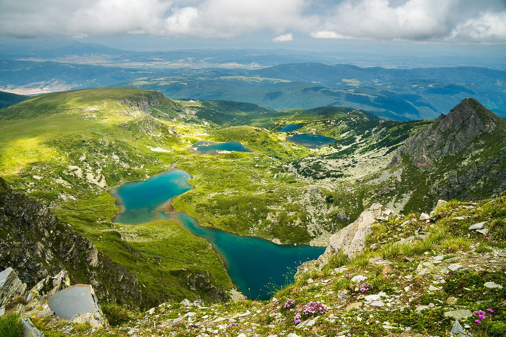

7те Рилски езера.
Седемте рилски езера е група езера с ледников произход, разположена в планината Рила. Това е най-посещаваната от туристи езерна група в България и е един от стоте
национални туристически обекта. Езерата се намират в Дамгския дял на Северозападна Рила и са разположени стъпаловидно между 2095 и 2535 m н.в.
